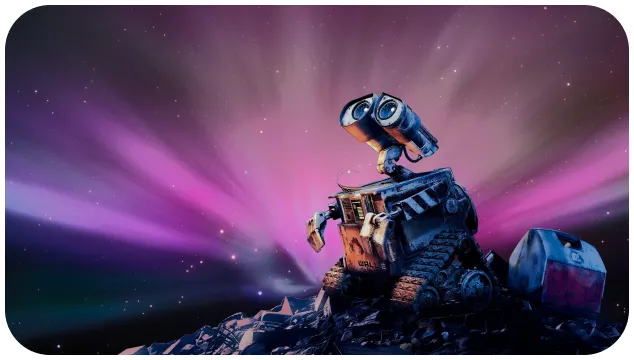

X’plore
WALL-E
Un film qui prédit notre avenir...
Et si notre monde finissait comme celui présenté dans le film Wall-e. Une terre sèche et aride, sans végétation, remplie de déchets. Cet avenir serait-il envisageable ? Wall-E aurait-il prédit notre avenir ? X’plore vous propose de redécouvrir ce classique des Studios Pixar.
résumé
Wall-E, film d’animation Pixar sortie en 2008. Seul sur terre, Wall-E est un des nombreux robots chargés de nettoyer la planète. Il découvre la dernière trace de végétation. C’est alors qu’il fait la rencontre de Eve. Un droit chargé de récupérer la plante découverte par Wall-E. S’en suit un voyage au fin fond de l’univers où Wall-E retrouvera l’espèce humaine qui avait quitté la terre…
Andrew STANTON

Son nom n’est surement pas inconnu du grand publiques. Connu pour les films de Toy’s Story et le Monde de Nemo, il est une des neuvièmes figures des studios Pixar. Ayant commencé sa carrière en tant qu’acteur, il travaille aussi comme réalisateur, scénariste et producteur pour de nombreux films
abonnez - vous gratuitement pour découvrir nos nouveaux articles
X'plore
Pour aller plus loin :
Rejoind une communauté de passionné.
#xplore #space #decouverte #technology
Retrouve X’plore sur YouTube et découvre nos meilleurs sujets.
Réagit à toute notre actualité